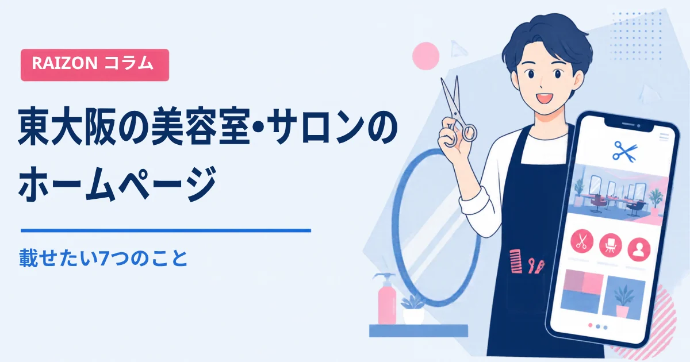
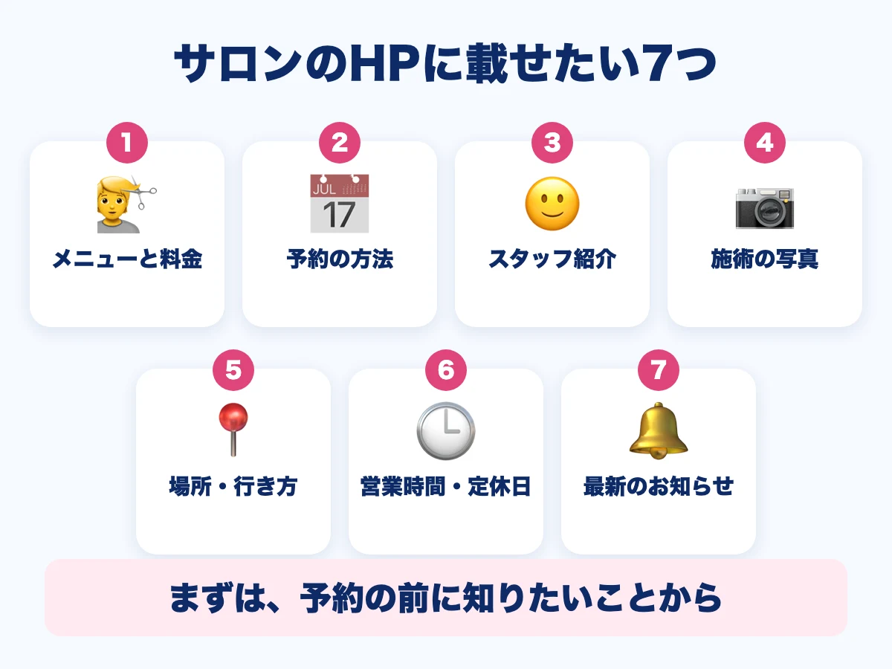
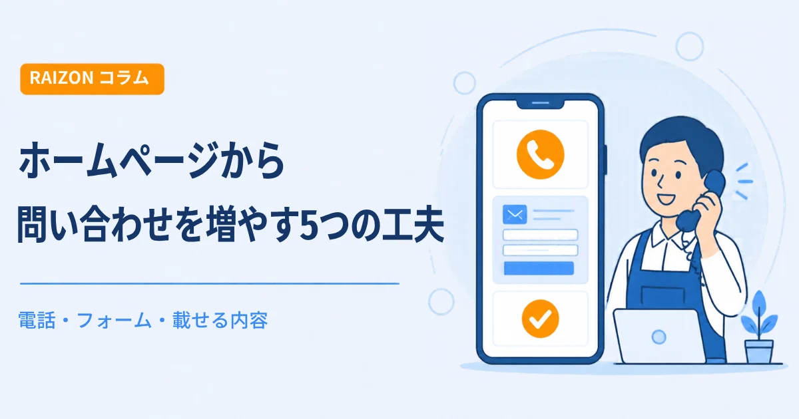
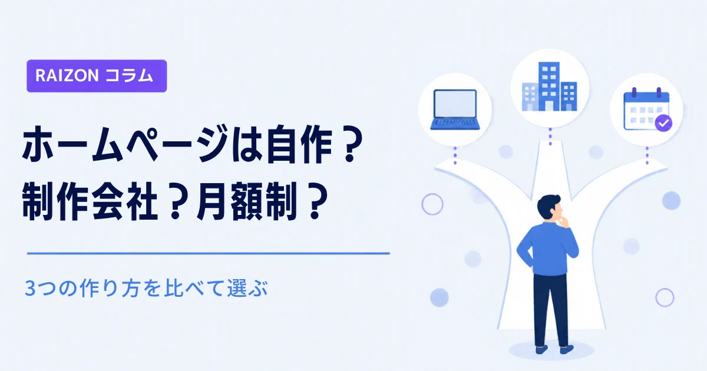

東大阪の美容室・サロンのホームページに載せたい7つのこと｜メニュー・予約・スタッフ

美容室やサロンを探すとき、お客様は、写真や口コミで気になったお店のホームページを開いて、「どんな施術か」「いくらか」「どう予約するか」を確かめます。東大阪の美容室・サロンにとって、ホームページは、予約の前の「最後の確認」の場所です。この記事では、載せておきたい情報を、7つにまとめます。
- 載せたいのは「メニューと料金」「予約の方法」「スタッフ紹介」「施術の写真」「場所・行き方」「営業時間・定休日」「お知らせ」の7つ
- 料金は、画像だけでなく文字でも書いておくと、検索で見つけてもらいやすい
- 予約サイトやSNSがあっても、お店の考えを自分の言葉で伝える場所があると安心

1. メニューと料金
いちばん見られるのが、メニューと料金です。カット、カラー、パーマ、トリートメントなど、メニューごとの料金を書きます。税込か税抜かも、書いておくとお客様が迷いません。メニュー表を画像で載せるときは、同じ内容を、文字でも書いておきましょう。画像だけだと、検索で拾われにくいことがあるからです。
2. 予約の方法
電話、予約フォーム、予約サイト、LINEなど、お客様が選びやすい方法を、わかりやすい場所に置きます。電話番号は、スマートフォンで押せば発信できるようにしておくと便利です。「当日の予約はできるか」「キャンセルの扱いはどうか」も、短く書いておくと、問い合わせが減ります。
3. スタッフ紹介
美容室やサロンは、「誰にお願いするか」が、お店選びの大きな理由になります。名前、得意なこと、ひとこと、顔写真があると、初めての方も安心して予約できます。長い文章でなくても、数行で十分です。
4. 施術の写真（スタイル・ビフォーアフター）
仕上がりのイメージがわく写真は、お客様の「このお店にお願いしたい」を後押しします。お客様の写真を載せるときは、必ず、ご本人の許可をもらってください。外観や店内の写真もあると、入りやすさが伝わります。スマホでの撮り方のコツは、ホームページの写真は、スマホで十分？をご覧ください。
5. 場所・行き方
最寄り駅（小阪駅、河内小阪駅、布施駅、八戸ノ里駅など）からの行き方、目印、駐車場・駐輪場の有無を書き、地図を埋め込みます。住所の表記は、Googleマップの情報とそろえておくと安心です。地域で見つけてもらうコツは、小阪・布施・八戸ノ里のホームページのコツをご覧ください。
6. 営業時間・定休日
平日と土日で時間が違う、最終受付の時間がある、といった細かいことも、書いておきます。臨時休業や、年末年始などの変更は、すぐに直せるようにしておきましょう。
7. 最新のお知らせ
新しいメニュー、季節のおすすめ、お休みのお知らせなどを載せます。更新されているホームページは、「いまも営業している」という安心感につながります。更新の目安は、ホームページの更新は、どのくらいの頻度で必要？をご覧ください。
| まずやること | あとから足すこと |
|---|---|
| メニューと料金・予約の方法・場所・営業時間 | スタッフ紹介・施術の写真・お知らせの更新 |
RAIZONでは
RAIZONは、東大阪市の下小阪を拠点に、お店や会社のホームページを月額制で制作しています。初期制作費は0円、月額9,800円（税抜）。月4回までの修正・更新が含まれ、メニューや料金、お知らせの変更にも対応します。最低契約期間はありません。業種ごとの案内は、美容室・サロン向けのページもご覧ください。なお、ホームページを作れば必ずお客様が増える、とはお約束できません。
よくある質問
予約サイトに載せていれば、ホームページはいりませんか？
予約サイトだけでも予約は受けられます。ただ、自分のホームページがあると、お店の雰囲気や考え方、スタッフの人柄を、自分の言葉で伝えられます。お店の名前で検索したときの受け皿にもなります。
SNSだけではだめですか？
SNSは、手軽に更新できるのが良いところです。ただ、料金やメニュー、行き方といった「変わらない情報」は、ホームページにまとめておくと、探している人が見つけやすくなります。役割を分けて使うと便利です。
写真が少なくても作れますか？
作れます。まずはある写真で始めて、あとから足すこともできます。
どこから相談すればいいですか？
お問い合わせフォームから、お気軽にご相談ください。
ほかのコラム

集客・運用ホームページから問い合わせを増やす5つの工夫｜電話・フォーム・載せる内容
ホームページを作ったのに問い合わせが少ない、という小さなお店・事業者さん向けに、問い合わせにつなげる5つの工夫を解説します。電話番号の見せ方、ボタンの置き場所、フォームの項目、料金や流れの書き方、写真での安心感を、やさしくまとめました。

制作の基礎ホームページは自作？制作会社？月額制？｜3つの作り方を比べて選ぶ
ホームページを自分で作る方法、制作会社に頼む方法、月額制のサービスに頼む方法を、費用・手間・更新のしやすさ・困ったときの相談先の4つの視点で比べます。東大阪の個人事業主さん・小さなお店向けに、選び方をやさしく解説します。
 制作の基礎
制作の基礎東大阪の飲食店のホームページに載せたい7つのこと｜メニュー・地図・予約
東大阪の飲食店がホームページを作るとき、載せておきたい情報を7つに整理しました。メニューと料金、営業時間、行き方、写真、予約・問い合わせ、お店の紹介、お知らせの載せ方をやさしく解説します。